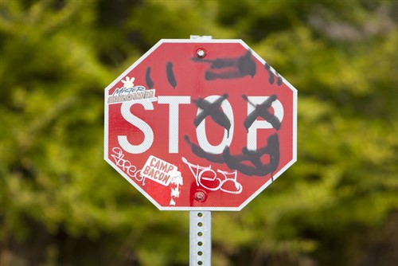

Challenges and Future Work

Challenges
- Dataset Quality: Ensuring that the synthetic training data accurately represents real-world graffiti variations and scenarios can be challenging.
- Model Robustness: Achieving a high level of robustness in the model to variations in lighting, weather conditions, and graffiti styles.
- Real-Time Processing: Implementing the pipeline to work efficiently in real-time scenarios, such as for use in autonomous vehicles.
- Generalization: Ensuring that the model can generalize well to detect graffiti on stop signs in different locations and environments.
- Privacy and Ethical Concerns: Addressing potential privacy concerns related to the use of image data, especially in public spaces.
Future Work
- Fine-Tuning and Transfer Learning: Continuously updating and fine-tuning the model with new data to improve its performance and adaptability.
- Multi-Class Classification: Extending the model to classify different types of graffiti or other types of vandalism on stop signs.
- Integration with Other Systems: Integrating the model into larger systems for urban management, traffic safety, or law enforcement applications.
- Real-Time Detection: Optimizing the pipeline for real-time detection, potentially using edge computing or specialized hardware.
- User Interface and Reporting: Developing a user-friendly interface for displaying detection results and generating reports for stakeholders.
